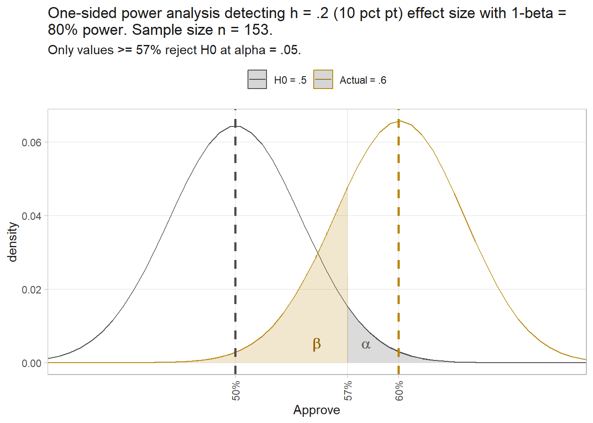
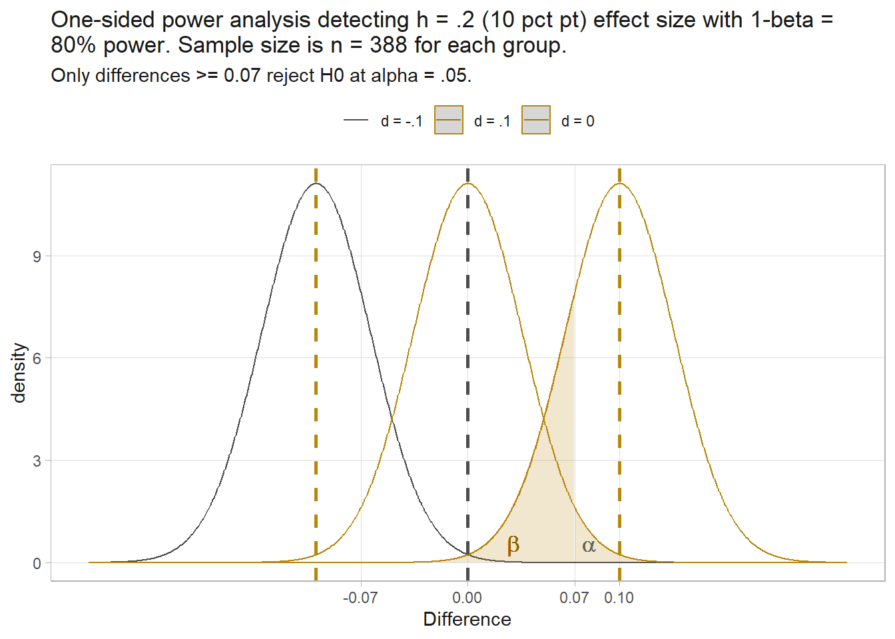
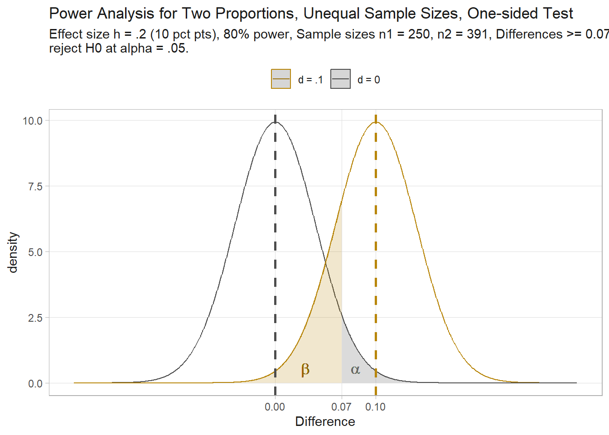

1 Frequentist Statistics
1.1 Central Tendancy and Dispersion
Suppose you have a data set with \(j = [1 .. p]\) variables. Each variable will have a distribution that can be characterized by its mean and variance. If you consider them together, you can see how variance and covariance are related. For the matrix algebra that follows, assume the data are organized in rows, so \(X_j\) is a row vector of \(n\) observations. \(X_{ij}\) refers to column \(i\) of row \(j\).
The mean of row vector \(X_j\) is \(\bar{x}_j = \frac{1}{n} \sum_{i = 1}^n X_{ij}\). \(\bar{x}_j\) estimates the population mean, \(\mu_j = E(X_j)\). The collection of means are a column vector.
\[\boldsymbol{\bar{x}} = \begin{pmatrix} \bar{x}_1 \\ \bar{x}_2 \\ \cdots \\ \bar{x}_p \end{pmatrix}\]
The variance of row vector \(X_j\) is the average squared difference from the mean, \(s_j^2 = \frac{1}{n-1} \sum_{i=1}^n (X_{ij} - \bar{x}_j)^2\). \(s_j^2\) estimates the population variance, \(\sigma_j^2 = E(X_j - \mu_j)^2\). Again, the collection is represented as a column vector,
\[\boldsymbol{s}^2 = \begin{pmatrix} s_1^2 \\ s_2^2 \\ \cdots \\ s_p^2 \end{pmatrix}\]
The square root of \(s^2\) is called the standard deviation. The concept of variance can be extended to pairs of variables, \(j\) and \(k\). The covariance of \(X_j\) and \(X_k\) is the average product of differences from their respective means, \(s_{jk} = \frac{1}{n-1} \sum_{i=1}^n (X_{ij} - \bar{x}_j) (X_{ik} - \bar{x}_k)\). \(s_{jk}\) estimates the population covariance, \(\sigma_{jk} = E\{ (X_{ij} - \mu_j) (X_{ik} - \mu_k)\}\). Notice how the sign of \(s_{jk}\) tells you how the variables relate. It’s positive if when one variable is larger than its mean, so is the other. It’s zero if the value of one variable tells you nothing about the other. It can be shown that \(s_{jk}\) is equivalently expressed as
\[ s_{jk} = \frac{1}{n-1} \left[ \sum_{i=1}^n X_{ij}X_{ik} - \frac{\sum_{i = 1}^n X_{ij} \sum_{i = 1}^n X_{ik}}{n} \right] \]
This is how it is actually calculated. The first term is dot product, \(X_j \cdot X_k\). The second term is the product of the averages. Use matrix algebra to generalize across all \(p\) variables to form the variance-covariance matrix.
\[ \begin{align} S &= \frac{1}{n-1} \sum_{i=1}^n (X_i - \bar{x}) (X_i - \bar{x})' \\ &= \frac{1}{n-1} \left[ \sum_{i=1}^n X_i X_i^{'} - \frac{\sum_{i = 1}^n X_i \sum_{i = 1}^n X_i}{n} \right] \end{align} \]
\(S\) estimates the population variance-covariance matrix, \(\boldsymbol{\Sigma}\). Divide the covariances by their product of their standard deviations to get their correlation, \(r_{jk} = \frac{s_{jk}}{s_j s_k}\). \(r_{jk}\) estimates the population correlation, \(\rho_{jk} = \frac{\sigma_{jk}}{\sigma_j \sigma_k}\).
1.2 Hypothesis Testing
P-values express how surprising a summary measure is given the null hypothesis (H0). Suppose you hypothesize that IQs have increased from their intended mean of \(\mu\) = 100, \(\sigma\) = 15. H0 is \(\mu_0\) = 100 with alternative H1 that \(\mu\) > 100. Suppose also that you are right: \(\mu\) is actually 106. The presumed and actual distribution of IQs would look like this:
According to the Central Limit Theorem (CLM), repeated samples of size n from a large population will yield \(\bar{x}\) values that approach a normal distribution centered at \(\mu\) with a standard deviation equal to the the standard error, \(SE = \frac{\sigma}{\sqrt{n}} = \frac{15}{\sqrt{30}}\) = 2.7. Repeated samples would be distributed \(\sim N(100, 2.7^2).\)
Suppose you take a random sample of n = 30 IQs from the population and measure \(\bar{x}\) = 104, SD = 15.2. How surprising is this if H0 is true? I.e., what is the probability of observing an \(\bar{x}\) of 104 if \(\mu\) is 100 and \(\sigma\) is 15? The situation looks like this:

The \(\alpha\) region starts at qnorm(.05, 100, 2.7, lower.tail = FALSE) = 104.5. \(\bar{x}\) would have had to be at least that large to reject H0. The probability of measuring \(\bar{x} \ge 104\) is derived from the z score, \(z = \frac{\bar{x} - \mu_0}{\sigma / \sqrt{n}} = \frac{104 - 100}{2.7}\) = 1.5. The probability of measuring a z score that high given H0 is \(P(z \ge 1.5)\) = 0.072, meaning 7.2% of the area under the null distribution is to the right of 104. Therefore, do not reject H0 at the \(\alpha\) = .05 level of significance.
1.2.1 Type I and II Errors
Either H0 (\(\mu = 106\)) or H1 (\(\mu \ge 106\)) is correct. You must choose to either reject or not reject H0. That means there are four possible states at the end of your analysis. If your summary measure is extreme enough for you to declare a “positive” result and reject H0, you are either correct (true positive) or incorrect (false positive). False positives are called Type I errors. Alternatively, if it is not extreme enough, you are either correct (true negative) or incorrect (false negative). False negatives are called Type II errors.
The probabilities of landing in these four states depend on your chosen significance level, \(\alpha\), and on the statistical power of the study, 1 - \(\beta\).
| H0 True | H0 False | |
|---|---|---|
| Positive test, reject H0. | False Positive Type I Error Probability = \(\alpha\) |
True Positive Good Call! Probability = 1 - \(\beta\) |
| Negative test, do not reject H0. | True Negative Good Call! Probability = (\(1 - \alpha\)) |
False Negative Type II Error Probability = \(\beta\) |
\(\alpha\) is the expected Type I error rate - extreme summary measures occurring by chance when there is no effect to measure. \(\beta\) is the expected Type II error rate - summary measures that by chance were not extreme enough to reject H0 even though there is an actual effect.
If the population mean really was \(\mu\) = 100, any sample mean greater than 104.5 would mistakenly reject H0 at the \(\alpha\) = .05 significance level, a Type I error. However, the population mean is actually \(\mu\) = 106, and our measured \(\bar{x}\) = 104 only achieved a p-value of 0.072, so we failed to reject H0, a Type II error.
Had the sample size been larger, the study would have had the power to reject H0. Here’s the plot with n = 50. The null and actual distributions are tighter, and the \(\alpha\) region starts at 103.5.

The area under the actual distribution to the left of \(alpha\) is labeled \(\beta\). It’s the Type II error zone. You don’t usually see much discussion of \(\beta\) in reports because \(\beta\) is based on the unknown actual population distribution. \(\beta\) is relevant at the design stage. It informs how large your sample needs to be in order to reject H0 given some expected \(\bar{x}\). Interestingly, you can see how there can be such a thing as too much power. If n is large enough, you can reject H0 with even a trivial effect size.
1.2.2 Statistical Power
The ability to detect a difference when it exists (the true positive) is called the power of the test. It’s measured by the area outside of \(\beta\). Changing n from 30 to 50 reduced the area in the \(\beta\) region, increasing the power of the test.
Statistical power is an increasing function of sample size, effect size, and significance level. The positive association with significance level means there is a trade-off between Type I and Type II error rates. A small \(\alpha\) sets a high bar for rejecting H0, but you run the risk of failing to appreciate a real difference. On the other hand, a large \(\alpha\) sets a low bar for rejecting H0, but you run the risk of mistaking a random difference as real.
The 1 - \(\beta\) statistical power threshold is usually set at .80, similar to the \(\alpha\) = .05 level of significance threshold convention. Given a real effect, a study with a statistical power of .80 will only find a positive test result 80% of the time. You may think more power is better, but beware that with a large enough sample size, even trivial effect sizes may yield a positive test result. You need to consider both sides of this coin.
A power analysis determines the sample size required to detect a threshold effect size given an \(\alpha\) level of significance. A power analysis expresses the relationship among four components. If you know any three, it tells you the fourth: The components are n, \(\alpha\), , 1 - \(\beta\), and Cohen’s d = \((\bar{x} - \mu_0)/\sigma\).
Suppose you set power at .80, significance level at .05, and n = 30. What effect size will this design detect?
(pwr <- pwr::pwr.t.test(
n = 30,
sig.level = .05,
power = 0.80,
type = "one.sample",
alternative = "greater"
))
One-sample t test power calculation
n = 30
d = 0.464949
sig.level = 0.05
power = 0.8
alternative = greaterAn effect size of d = 0.465 will fall in the \(\alpha\) = .05 region with probability 1 - \(\beta\) = .80 if the sample size is n = 30. Multiply d = 0.465 by \(\sigma\) = 15 to convert to the IQ units, 7.0. More likely, you will use the power test to detect the required sample size. Suppose you set \(1 - \beta\) = .8 and \(\alpha\) = .05, and want to detect an effect size of \(5 / 15\).
(pwr <- pwr::pwr.t.test(
d = 5 / 15,
sig.level = .05,
power = 0.80,
type = "one.sample",
alternative = "greater"
))
##
## One-sample t test power calculation
##
## n = 57.02048
## d = 0.3333333
## sig.level = 0.05
## power = 0.8
## alternative = greaterYou need a larger sample, n = 58. You can use the power test formula for various n sizes to see the relationship with effect size. Note: the y-axis multiplies Cohen’s d by \(\sigma\) to get the effect size in original units.

The dashed lines show a sample size of 30 is required to detect an effect size of 7 at a .05 significance level with 80% probability.
1.2.3 Power Analysis Variations
How many people would you need to survey to detect a clear majority? Set an effect size that detects the difference from 50% (no majority) to 60% (clear majority)
h <- pwr::ES.h(p1 = .60, p2 = .50)
(pwr <- pwr::pwr.p.test(
h = h,
sig.level = .05,
power = .80,
alternative = "greater"
))
proportion power calculation for binomial distribution (arcsine transformation)
h = 0.2013579
n = 152.4863
sig.level = 0.05
power = 0.8
alternative = greaterYou need 153 people. Simulate this 1,000 times from a population centered at 60%. ~80% of simulations should reject H0.
n <- ceiling(pwr$n)
sims <- rbinom(n = 1000, size = n, prob = .60)
crit_val <- qbinom(p = .95, size = n, prob = .50, lower.tail = TRUE)
mean(sims >= crit_val)[1] 0.805Here are the theoretical distributions showing the relationship between effect size and power.

\(\beta\) = 24% of the Actual curve area is to the left of 57%.
pbinom(q = crit_val, size = n, prob = .6, lower.tail = TRUE)
## [1] 0.2381819How many people would you need to survey to detect a clear preference either way? Set an effect size that detects the difference from 50% (no preference) to 40% or 60%.
h <- pwr::ES.h(p1 = .60, p2 = .50)
(pwr <- pwr::pwr.p.test(
h = h,
sig.level = .05,
power = .80,
alternative = "two.sided"
))
proportion power calculation for binomial distribution (arcsine transformation)
h = 0.2013579
n = 193.5839
sig.level = 0.05
power = 0.8
alternative = two.sidedYou need more people for a two-sided test, 194, and the critical values are further from 50%. Here’s the simulation again.
n <- ceiling(pwr$n)
sims <- rbinom(n = 1000, size = n, prob = .60)
crit_val1 <- qbinom(p = .025, size = n, prob = .50, lower.tail = TRUE)
crit_val2 <- qbinom(p = .975, size = n, prob = .50, lower.tail = TRUE)
(h0_reject_rate <- mean(sims <= crit_val1 | sims >= crit_val2))[1] 0.793Here are the theoretical distributions.

\(\beta\) = 19% of the Actual = .4 curve area is to the right of 43% and \(\beta\) = 24% of the Actual = .6 curve area is to the left of 57%.
pbinom(q = crit_val1, size = n, prob = .4, lower.tail = FALSE)
## [1] 0.1932935
pbinom(q = crit_val2, size = n, prob = .6, lower.tail = TRUE)
## [1] 0.2356584Does group 1 differ from group 2 by at least 5% in their support for a policy? Note that n is the sample size for each population.
pwr::pwr.2p.test(
h = ES.h(p1 = .55, p2 = .50),
power = 0.80,
sig.level = .05,
alternative = "two.sided"
)
Difference of proportion power calculation for binomial distribution (arcsine transformation)
h = 0.1001674
n = 1564.529
sig.level = 0.05
power = 0.8
alternative = two.sided
NOTE: same sample sizespwr::pwr.2p.test(
h = cohen.ES(test = "r", size = "medium")$effect.size,
power = .80,
sig.level = .05,
alternative = "two.sided"
)
Difference of proportion power calculation for binomial distribution (arcsine transformation)
h = 0.3
n = 174.4191
sig.level = 0.05
power = 0.8
alternative = two.sided
NOTE: same sample sizes1.2.4 p-value Intuition
What distribution of p-values would you expect if there is a true effect and you repeated the study many times? What if there is no true effect? The answer is completely determined by the statistical power of the study.1
To see this, run 100,000 simulations of an experiment measuring the average IQ from a sample of size n = 26. The samples will be 26 random values from the normal distribution centered at 106 with a standard deviation of 15. H0 is \(\mu\) = 100.
# 100,000 random samples of IQ simulations from a normal distribution where
# SIGMA = 15. True population value is 100, but we'll try other values.
n_sims <- 1E5
mu <- 100
SIGMA <- 15
run_sim <- function(MU_0 = 106, n = 26) {
data.frame(i = 1:n_sims) %>%
mutate(
x = map(i, ~ rnorm(n = n, mean = MU_0, sd = SIGMA)),
z = map(x, ~ t.test(., mu = mu)),
p = map_dbl(z, ~ .x$p.value),
x_bar = map_dbl(x, mean)
) %>%
select(x_bar, p)
}The null hypothesis is that the average IQ is 100. Our rigged simulation finds an average IQ of 106 - an effect size of 6.
sim_106_26 <- run_sim(MU_0 = 106, n = 26)
glimpse(sim_106_26)
## Rows: 100,000
## Columns: 2
## $ x_bar <dbl> 114.15088, 105.21275, 109.20296, 106.36169, 109.39800, 105.82339…
## $ p <dbl> 2.078473e-04, 5.493171e-02, 2.464653e-02, 2.593226e-02, 7.327696…
mean(sim_106_26$x_bar)
## [1] 105.9945The statistical power achieved by the simulations is 50%. That is, the typical simulation detected the effect size of 6 at the .05 significance level about 50% of the time.
pwr.t.test(
n = 26,
d = (106 - 100) / 15,
sig.level = .05,
type = "one.sample",
alternative = "two.sided"
)
One-sample t test power calculation
n = 26
d = 0.4
sig.level = 0.05
power = 0.5004646
alternative = two.sidedThat means that given a population with an average IQ of 106, a two-sided hypothesis test of H0: \(\mu\) = 100 from a sample of size 26 will measure an \(\bar{x}\) with a p-value under .05 only 50% of the time. You can see that in this histogram of p-values.
sim_106_26 %>% plot_sim()
Had there been no effect to observe, you’d expect all p-values to be equally likely, so the 20 bins would all have been 5% of the number of simulations – i.e., uniformly distributed under the null. This is called “0 power”, although 5% of the p-values will still be significant at the .05 level. The 5% of p-values < .05 is the Type II error rate - that probability of a positive test result when there is no actual effect to observe.
run_sim(MU_0 = 100, n = 26) %>%
plot_sim(MU_0 = 100)If you want a higher powered study that would detect the effect at least 80% of the time (the normal standard), you’ll need a higher sample size. How high? Conduct the power analysis again, but specify the power while leaving out the sample size.
pwr.t.test(
power = 0.80,
d = (106 - 100) / 15,
sig.level = .05,
type = "one.sample",
alternative = "two.sided"
)
One-sample t test power calculation
n = 51.00945
d = 0.4
sig.level = 0.05
power = 0.8
alternative = two.sidedYou need 51 people (technically, you might want to round up to 52). Here’s what that looks like. 80% of p-values are below .05 now.
run_sim(MU_0 = 106, n = 51) %>%
plot_sim(MU_0 = 106)
So far, we’ve discovered that when there is an effect, the probability that the measure p-value is under the \(\alpha\) significance level equals the power of the study, 1 - \(\beta\) - the true positive rate, and \(\beta\) will be above the \(\alpha\) level - the false negative rate. We’ve also discovered that when there is no effect, all p-values are equally likely, so \(\alpha\) of them will be below the \(alpha\) level of significance - the false positive rate, and 1 - \(\alpha\) will be above \(\alpha\) - the true negative rate.
It’s not the case that all p-values below 0.05 are support for the alternative hypothesis. If the statistical power is high enough, a p-value just under .05 can be even less likely under the null hypothesis.
run_sim(MU_0 = 108, n = 51) %>%
mutate(bin = case_when(p < .01 ~ "0.00 - 0.01",
p < .02 ~ "0.01 - 0.02",
p < .03 ~ "0.02 - 0.03",
p < .04 ~ "0.03 - 0.04",
p < .05 ~ "0.04 - 0.05",
TRUE ~ "other")
) %>%
janitor::tabyl(bin) bin n percent
0.00 - 0.01 86400 0.86400
0.01 - 0.02 5051 0.05051
0.02 - 0.03 2367 0.02367
0.03 - 0.04 1420 0.01420
0.04 - 0.05 929 0.00929
other 3833 0.03833(Recall that under H0, all p-values are equally likely, so each of the percentile bins would contain 1% of p-values.)
In fact, at best, a p-value between .04 and .05 can only be about four times as likely under the alternative hypothesis as the null hypothesis. If your p-value is just under .05, it is at best weak support for the alternative hypothesis.
This section is based on ideas I learned from homework assignment 1 in Daniel Lakens’s Coursera class Improving your statistical inferences.↩︎